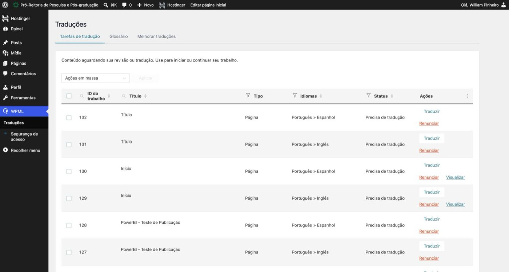
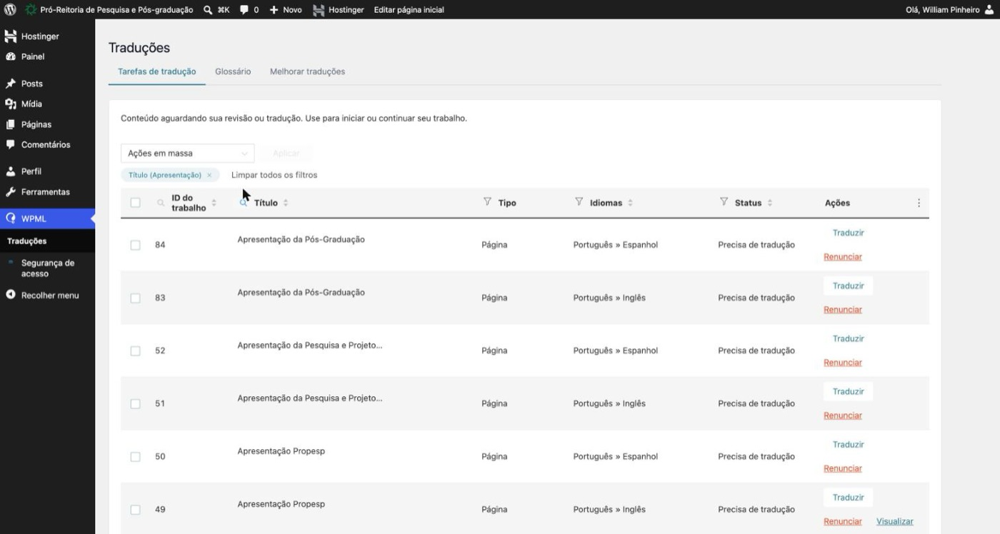
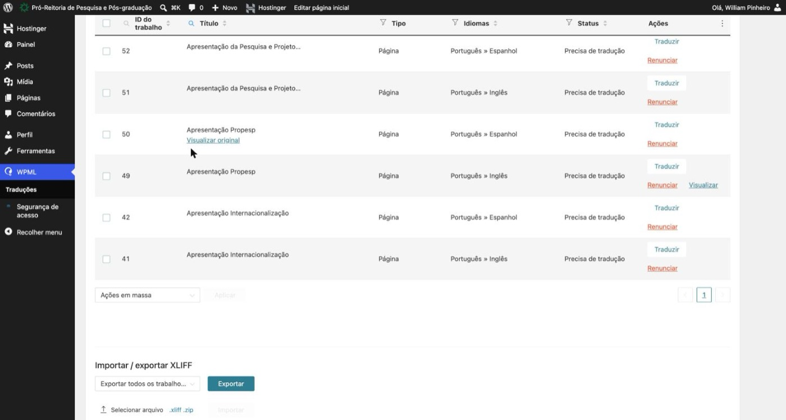
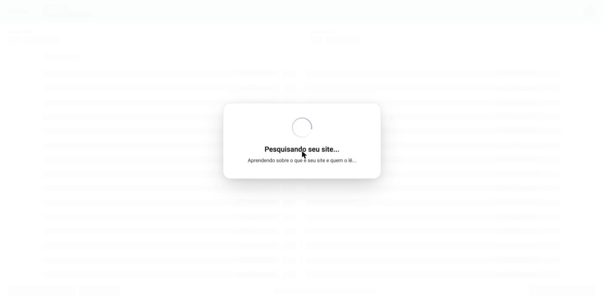
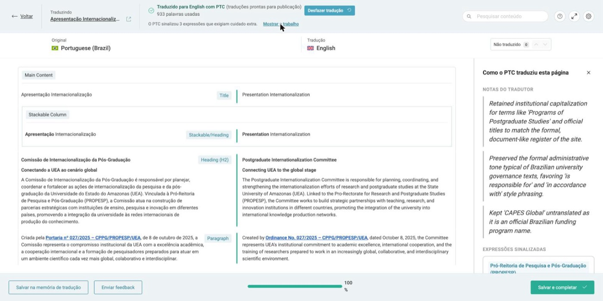
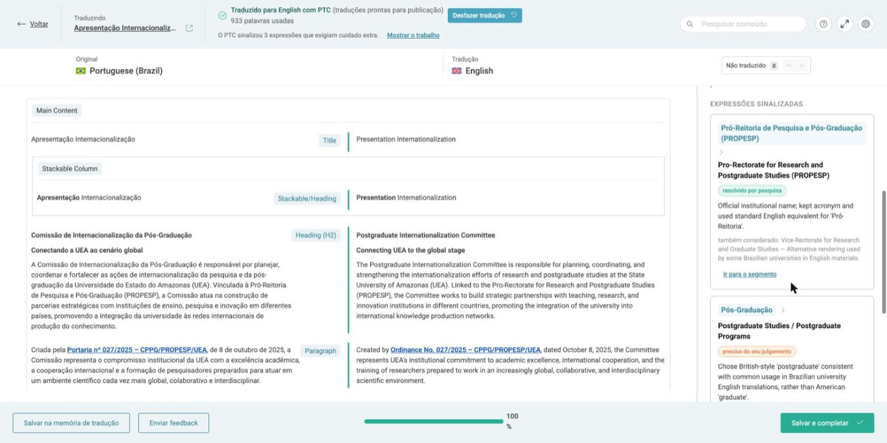
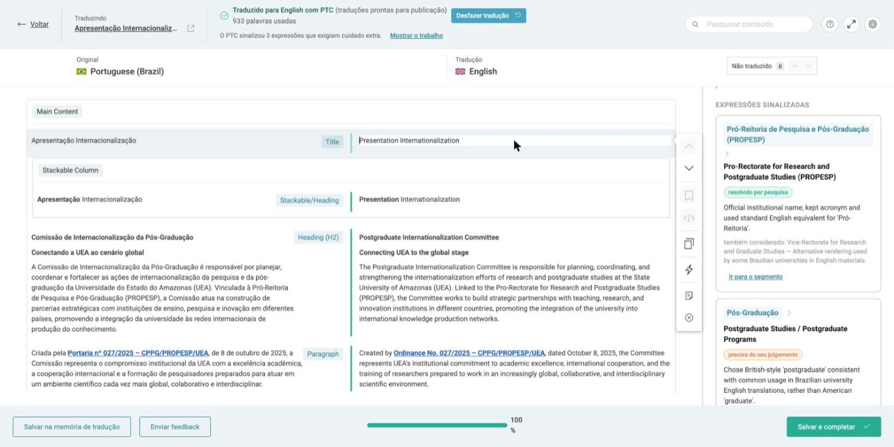
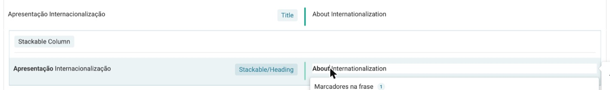
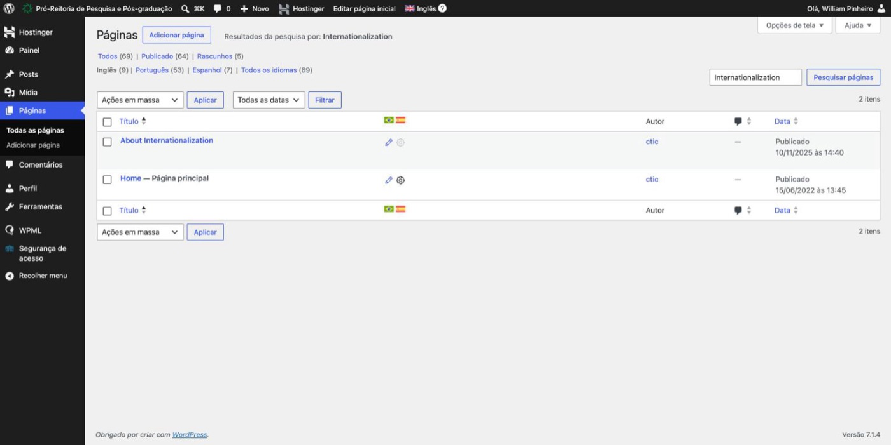
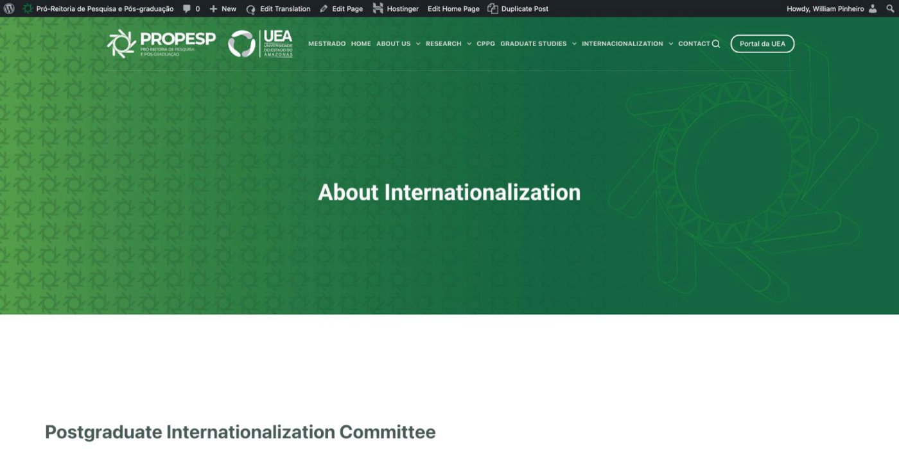

Sumário
As edições anteriores ensinavam a ler painéis. Esta ensina a escrever o site em outros idiomas. O exemplo usado do começo ao fim é a página Apresentação Internacionalização, traduzida para o inglês em 12/11/2026.
O que você precisa
Login no painel WordPress da PROPESP com permissão de tradutor no WPML. Para cada página são duas tarefas: Português » Inglês e Português » Espanhol. Reserve de 10 a 15 minutos por idioma.
Veja também os outros guias da série: Painéis de Convênios, Prospecção de Parcerias e Mobilidade Acadêmica.
Antes de começar
O WPML é o plugin que deixa o site em três idiomas. Ele cria uma tarefa para cada página e cada idioma, e já entrega a tradução automática pronta. Quem traduz faz, na prática, um trabalho de revisor.
Cinco ideias para não se perder
- Tarefa
- Uma página em um idioma de destino. “Apresentação Internacionalização” tem a tarefa 41 (inglês) e a 42 (espanhol).
- Editor (ATE)
- O Advanced Translation Editor, que abre em outro endereço (
e.ate.wpml.org), com o original e a tradução lado a lado. - PTC
- O tradutor automático do WPML. Quando o editor abre, ele já traduziu a página inteira e consumiu créditos de palavras.
- Salvamento
- O editor salva sozinho cada correção. Dá para fechar e voltar depois sem perder nada.
- Salvar e completar
- É o único botão que publica. A tradução recebe o status da página original: se a original está no ar, a tradução entra no ar.
Encontrando a tarefa
Todas as traduções pendentes ficam numa lista só. O filtro por título leva direto à página que você quer.
- Entre no painel do WordPressAcesse
proreitoria.uea.edu.br/propesp/wp-admincom seu usuário. - Clique em WPML › TraduçõesNo menu lateral. Fique na aba Tarefas de tradução.
- Filtre pelo títuloClique na lupa ao lado de Título (marcador 1), digite parte do nome (aqui,
Apresentação) e tecle Enter. - Escolha o idiomaNa coluna Idiomas, ache a linha Português » Inglês ou Português » Espanhol.
- Clique em “Traduzir”Na coluna Ações. O editor abre na mesma aba.

123456- Busca por título. A lupa ao lado de ID do trabalho busca pelo número.
- Idiomas: de qual para qual idioma é a tarefa.
- Status: “Precisa de tradução” ou “Precisa de atualização”.
- Traduzir: abre o editor.
- Renunciar: cancela a tarefa. Não clique.
- Traduções, dentro do menu WPML.

12
123Cuidado com “Renunciar”
O link vermelho abaixo de “Traduzir” cancela a tarefa, e ela some da lista. Se clicar sem querer, peça ao administrador do WPML para reenviar a página para tradução.
Conhecendo o editor
Ao abrir, o editor passa alguns segundos analisando o site. Depois mostra a página quebrada em trechos: o português à esquerda e a tradução, já pronta, à direita.

- Voltar: sai do editor sem completar. O que foi corrigido fica salvo.
- Traduzido com PTC e palavras usadas (aqui, 933).
- Mostrar o trabalho: notas do tradutor automático (capítulo 4).
- Desfazer tradução: apaga a tradução automática. Evite.
- Original em português, só leitura.
- Tradução: clique em qualquer trecho para editar.
- Não traduzido: conta trechos vazios. As setas pulam de um para o outro.
- Tipo do bloco: Title, Heading, Paragraph, List Item, Button…
- Progresso da tarefa.
- Salvar e completar: publica (capítulo 5).
Quanto custa abrir uma tarefa
A tradução automática roda quando o editor abre e consome créditos de palavras do WPML. Abra só as tarefas que for revisar.
Revisando e corrigindo
A tradução automática acerta quase tudo no corpo do texto. Os erros aparecem em títulos, nomes de cargos e termos institucionais. Comece pelo que o próprio PTC marcou.
As notas do tradutor automático
- Clique em “Mostrar o trabalho”No topo do editor. Abre um painel à direita.
- Leia as notas do tradutorExplicam as escolhas de tom e o que ficou sem tradução de propósito (por exemplo, CAPES Global).
- Confira as expressões sinalizadasAs marcadas como precisa do seu julgamento pedem decisão. Ir para o segmento leva ao trecho.

12
123Corrigindo um trecho
- Clique no texto da direitaO trecho fica em modo de edição, com uma barra de ferramentas ao lado.
- ReescrevaAqui, “Presentation Internationalization” virou “About Internationalization”, mais natural em inglês.
- Texto com negrito ou link: troque só a palavraDê dois cliques na palavra e digite por cima. Apagar o trecho inteiro remove a formatação.
- Confira “Todas as alterações salvas”O aviso verde aparece no topo depois de cada correção.

12
✓Checklist da revisão
| O que olhar | Regra | Exemplo |
|---|---|---|
| Títulos de página | Evitar tradução literal | Apresentação → About, e não Presentation |
| Nomes de pessoas | Nunca traduzir | Patricia Melchionna Albuquerque |
| Títulos acadêmicos | Adaptar | Profa. Dra. → Prof. Dr. |
| Cargos | Usar o padrão do capítulo 6 | Presidente → Chair |
| Links e endereços | Iguais ao original | lattes.cnpq.br/… |
| Siglas oficiais | Manter | UEA, PROPESP, CAPES Global, PPGs |
| Botões | Texto curto e usual | Currículo Lattes → Lattes CV |
Publicando e conferindo
Revisão pronta, um clique publica. Depois, vale conferir no WordPress e no próprio site se a página entrou no ar como esperado.
- Clique em “Salvar e completar”Botão verde no canto inferior direito do editor. Você volta para a lista de tarefas, sem a tarefa concluída.
- Abra Páginas › InglêsNo menu lateral, clique em Páginas e depois em Inglês na linha de idiomas (marcador 1).
- Confira o statusA coluna Data mostra Publicado (marcador 3).
- Veja no sitePasse o mouse sobre o título e clique em Ver. O endereço em inglês tem
/en/, e o em espanhol,/es/.
É este clique que publica
A tradução recebe o status da página original. Se ainda quiser que alguém revise, saia pelo botão Voltar: as correções ficam salvas e a tarefa continua na lista.

1234- Filtro de idioma Inglês.
- Página traduzida: About Internationalization.
- Status Publicado.
- Bandeiras: o lápis abre a tradução da página em cada idioma.

123- Título corrigido, já no ar.
- MESTRADO continua em português no menu.
- INTERNACIONALIZATION com erro de grafia.
O menu não faz parte da tarefa
Os itens do menu do topo são traduzidos à parte, na tradução de menus do WPML. Os marcadores 2 e 3 mostram dois itens que ainda precisam de correção.
Padrões de tradução
O site é lido como um todo. Se uma página diz Postgraduate e a seguinte diz Graduate, o leitor estrangeiro estranha. Use sempre os termos abaixo.
| Português | Inglês | Espanhol |
|---|---|---|
| Pró-Reitoria de Pesquisa e Pós-Graduação (PROPESP) | Pro-Rectorate for Research and Postgraduate Studies (PROPESP) | Prorrectoría de Investigación y Posgrado (PROPESP) |
| Universidade do Estado do Amazonas (UEA) | State University of Amazonas (UEA) | Universidad del Estado de Amazonas (UEA) |
| Pós-Graduação | Postgraduate | Posgrado |
| Programas de Pós-Graduação (PPGs) | Postgraduate Programs (PPGs) | Programas de Posgrado (PPGs) |
| Comissão de Internacionalização da Pós-Graduação | Postgraduate Internationalization Committee | Comisión de Internacionalización del Posgrado |
| doutorado-sanduíche | sandwich doctoral program | doctorado sándwich |
| Portaria | Ordinance | Resolución |
| Currículo Lattes | Lattes CV | Currículum Lattes |
| Presidente / Vice-Presidente | Chair / Vice-Chair | Presidente / Vicepresidente |
| Membro Interno · Téc. Administrativo | Internal Member · Administrative Technician | Miembro Interno · Técnico Administrativo |
| Profa. Dra. / Prof. Dr. | Prof. Dr. | Prof.ª Dra. / Prof. Dr. |
| Iniciação Científica (ICT) | Undergraduate Research (ICT) | Iniciación Científica (ICT) |
| Apresentação (em título) | About … | Presentación / Acerca de … |
Não se traduzem
Nomes de pessoas, endereços de links e nomes oficiais de programas e órgãos: CAPES Global, CNPq, FAPEAM, PROPOSDOC, PROVISIT, PROATEC, PROTLAB, CPPG, CPPI.
Espanhol: falsos amigos
O PTC às vezes deixa passar falsos cognatos. Exemplo: “acompanhamento” (de ações) é seguimiento, e não acompañamiento.
Roteiro rápido
Uma página, um idioma
- WPML › Traduções › filtre pelo título › Traduzir.
- Espere o editor carregar e clique em Mostrar o trabalho.
- Resolva as expressões marcadas como “precisa do seu julgamento”.
- Role a página inteira e aplique o checklist e os padrões.
- Salvar e completar e confira em Páginas e no site.
Checklist pessoal
Os passos numerados têm uma caixinha “feito”, salva só neste navegador.
Dúvidas e cuidados
Situações que aparecem no dia a dia das traduções.
Posso deixar uma tradução como rascunho?
Sim. Corrija o que quiser e saia pelo botão Voltar, sem clicar em “Salvar e completar”. Tudo fica salvo no editor, e a página não vai ao ar. Para continuar, clique em Traduzir de novo na mesma tarefa.
Publiquei e quero tirar do ar. O que faço?
Em Páginas, filtre pelo idioma, clique em Editar na página traduzida e mude o status para Rascunho.
O que é “Precisa de atualização”?
A página original em português mudou depois que a tarefa foi criada. Ao abrir o editor, só os trechos novos ou alterados precisam de tradução.
A tarefa sumiu da lista. Foi publicada?
Tarefas concluídas saem da lista. Confira em Páginas, filtrando pelo idioma. Se a página não estiver lá, a tarefa pode ter sido cancelada em “Renunciar”.
Corrigi um termo numa página. Ele muda nas outras?
Não automaticamente. Para fixar um termo nas próximas traduções, cadastre-o na aba Glossário, ao lado de Tarefas de tradução.
Glossário rápido
- WPML
- Plugin de tradução do WordPress usado no site da PROPESP.
- ATE
- Advanced Translation Editor, o editor de tradução do WPML.
- PTC
- Tradução automática do WPML que preenche a tarefa ao abrir o editor.
- Segmento
- Cada trecho da página no editor: título, parágrafo, item de lista, botão.
- Tarefa (job)
- Uma página em um idioma de destino, com número próprio (ID do trabalho).
- /en/ · /es/
- Prefixos dos endereços das versões em inglês e espanhol.
Todos os endereços
Guia de Traduções do Site · PROPESP / UEA · Edição nº 4, novembro de 2026. Prints feitos em 12/11/2026 na tradução real da tarefa 41.
Autoria: William Pinheiro · Currículo Lattes